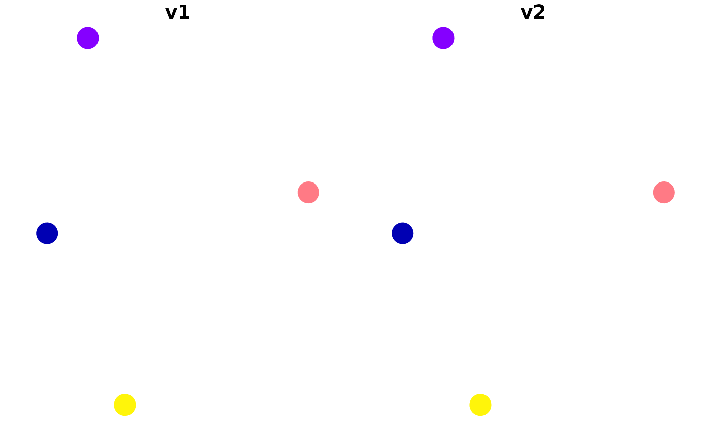
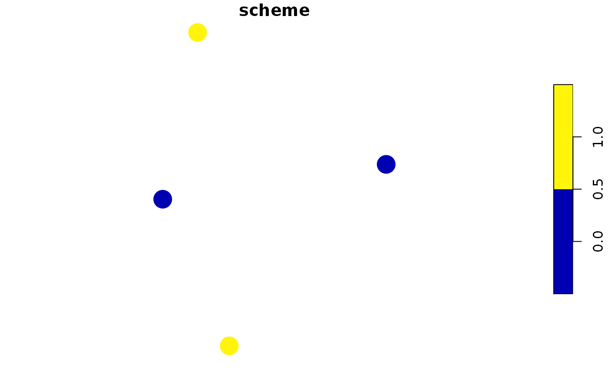

Generate a survey scheme by maximizing the diversity of environmental conditions that are surveyed.
env_div_survey_scheme(
site_data,
cost_column,
survey_budget,
env_vars_columns,
method = "mahalanobis",
locked_in_column = NULL,
locked_out_column = NULL,
exclude_locked_out = FALSE,
solver = "auto",
verbose = FALSE
)sf::sf() object containing the candidate survey
sites.
character name of the column in the argument to
the argument to site_data that contains the cost for surveying each
site. No missing (NA) values are permitted.
numeric vector of maximum budgets for the survey
schemes. No missing (NA) values are permitted.
character vector names of the columns in
the argument to site_data that contain numeric environmental
variables. No missing (NA) values are permitted.
character name of the distance metric to use for
calculating environmental dissimilarity scores. See
vegan::vegdist() documentation the method parameter
for other available distance metrics and more information.
No missing (NA) values are permitted.
Defaults to "mahalanobis" for Mahalanobis distances.
character (optional) name of the column in
the argument to site_data that contains logical
(TRUE/ FALSE) values indicating if certain sites should be
locked into the survey scheme.
No missing (NA) values are permitted.
Defaults to NULL such that no sites are locked in.
character (optional) name of the column in
the argument to site_data that contains logical
(TRUE/ FALSE) values indicating if certain sites should be
locked out of the survey scheme.
No missing (NA) values are permitted.
Defaults to NULL such that no sites are locked out.
logical should locked out planning units
be entirely excluded from the optimization process?
Defaults to FALSE.
character name of the optimization solver to use
for generating survey schemes.
Available options include: "Rsymphony", "gurobi" and "auto".
The "auto" method will use the Gurobi optimization software if
it is available; otherwise, it will use the SYMPHONY software
via the Rsymphony package.
Defaults to "auto".
logical indicating if information should be
printed while generating survey scheme(s). Defaults to FALSE.
A matrix of logical (TRUE/ FALSE)
values indicating if a site is selected in a scheme or not. Columns
correspond to sites, and rows correspond to different schemes.
The integer programming formulation of the environmental diversity reserve selection problem (Faith & Walker 1996) is used to generate survey schemes.
This function can use the Rsymphony package and the Gurobi optimization software to generate survey schemes. Although the Rsymphony package is easier to install because it is freely available on the The Comprehensive R Archive Network (CRAN), it is strongly recommended to install the Gurobi optimization software and the gurobi R package because it can generate survey schemes much faster. Note that special academic licenses are available at no cost. Installation instructions are available online for Linux, Windows, and Mac OS operating systems.
Faith DP & Walker PA (1996) Environmental diversity: on the best-possible use of surrogate data for assessing the relative biodiversity of sets of areas. Biodiversity & Conservation, 5, 399--415.
# set seed for reproducibility
set.seed(123)
# simulate data
x <- sf::st_as_sf(
tibble::tibble(x = rnorm(4), y = rnorm(4),
v1 = c(0.1, 0.2, 0.3, 10), # environmental axis 1
v2 = c(0.1, 0.2, 0.3, 10), # environmental axis 2
cost = rep(1, 4)),
coords = c("x", "y"))
# plot the sites' environmental conditions
plot(x[, c("v1", "v2")], pch = 16, cex = 3)

# generate scheme with a budget of 2
s <- env_div_survey_scheme(x, "cost", 2, c("v1", "v2"), "mahalanobis")
# print scheme
print(s)
#> [,1] [,2] [,3] [,4]
#> [1,] FALSE TRUE FALSE TRUE
# plot scheme
x$scheme <- c(s)
plot(x[, "scheme"], pch = 16, cex = 3)
